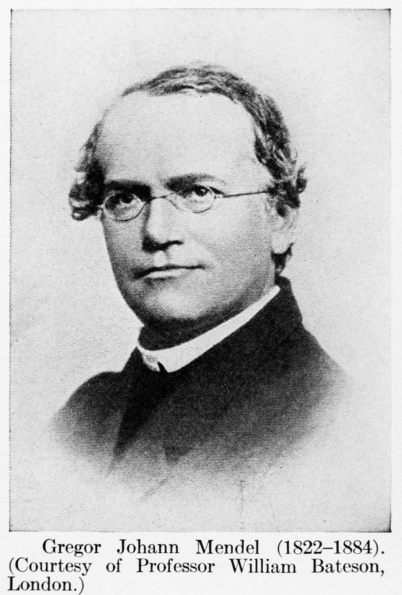
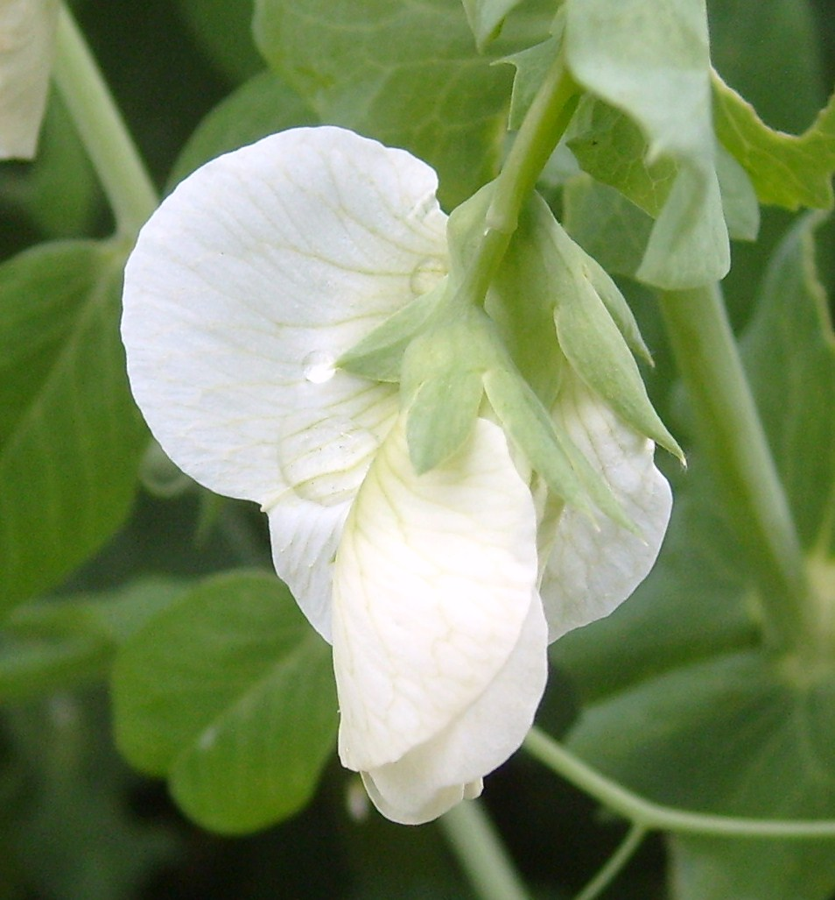

孟德尔的豌豆杂交实验（一）（上）：一对相对性状的杂交实验
本期导读
孟德尔的豌豆杂交实验（一）（上） · 分离现象 · 测交

视频原话 · 导读3 句
- 同学们好！这节课梳理人教版必修二第一章第一节的上半部分——一对相对性状的杂交实验。8.9s
- 高考常考豌豆杂交的操作、对分离现象的解释、测交和假说—演绎法。6.8s
- 我们按八个考点梳理，每个考点都讲清楚怎么考、怎么做。5.5s
豌豆作材料的优点01#

- 1纯种自花传粉、闭花受粉，自然状态下一般都是纯种
- 2易区分具有易于区分的相对性状（如高茎与矮茎）
- 3易操作花较大，便于人工操作；子代多，便于统计分析
易错
闭花受粉：花未开放时已完成受粉 → 人工杂交必须在花蕾期（花粉成熟前）去雄
视频原话4 句
- 考点一，豌豆作遗传材料的优点。第一，豌豆是自花传粉、闭花受粉的植物，自然状态下一般都是纯种。10.7s
- 第二，豌豆有许多易于区分的相对性状，比如高茎和矮茎，实验结果容易观察和分析。8.3s
- 第三，豌豆花比较大，便于人工操作；子代数量多，便于统计分析。6.9s
- 易错：闭花受粉是指花还没开放就已经完成受粉，所以人工杂交必须在花蕾期去雄。8.8s
人工异花传粉02#
父本（♂）：提供花粉的植株 母本（♀）：接受花粉的植株
① 去雄
花蕾期，除去母本花的全部雄蕊
② 套袋
防止外来花粉干扰
③ 人工授粉
父本花粉涂在去雄花的雌蕊柱头上
④ 再套袋
防止外来花粉干扰
易错
去雄要在花粉成熟前、要彻底；两次套袋的目的相同：避免外来花粉的干扰
视频原话4 句
- 考点二，人工异花传粉。提供花粉的植株叫父本，接受花粉的植株叫母本。7.8s
- 第一步去雄：在花蕾期，除去母本花的全部雄蕊。第二步套袋，防止外来花粉干扰。8.2s
- 第三步人工授粉：采集父本的花粉，涂在去雄花的雌蕊柱头上。第四步再套袋。7.9s
- 考法：问步骤顺序和目的。易错：去雄要在花粉成熟前、要彻底；两次套袋的目的都是避免外来花粉的干扰。11.2s
遗传学基本概念03#
| 概念 | 含义 | 实例 |
|---|---|---|
| 相对性状 | 一种生物的同一种性状的不同表现类型 | 豌豆的高茎与矮茎 |
| 显性性状 | 杂种 F1 显现出来的性状 | 高茎 |
| 隐性性状 | 杂种 F1 未显现出来的性状 | 矮茎 |
| 性状分离 | 杂种后代中同时出现显性性状和隐性性状 | F2 中既有高茎又有矮茎 |
解题方法
相对性状抓三个关键词：同种生物、同一性状、不同表现。例：狗的长毛与兔的短毛不是相对性状
视频原话4 句
- 考点三，几个基本概念。相对性状，是一种生物的同一种性状的不同表现类型。7.8s
- 杂种子一代显现出来的性状叫显性性状，没有显现出来的叫隐性性状。7.0s
- 杂种后代中同时出现显性性状和隐性性状的现象，叫性状分离。6.7s
- 解题方法：判断相对性状抓三个关键词——同种生物、同一性状、不同表现。狗的长毛和兔的短毛就不是。10.8s
一对相对性状实验04#
- 1F1全为高茎（显性性状）
- 2F2出现性状分离，高∶矮 ≈ 3∶1
- 3正反交高♀×矮♂ 与 矮♀×高♂ 结果相同
- 4其他 6 对F2 也都接近 3∶1
考法
F1 只表现显性性状，F2 出现性状分离（3∶1）；3∶1 是大量统计的结果，个体数少时不一定符合
视频原话5 句
- 考点四，一对相对性状的杂交实验。纯种高茎和纯种矮茎杂交，F1 全是高茎。8.7s
- F1 自交，F2 中既有高茎又有矮茎，787 株对 277 株，数量比接近 3∶1。9.2s
- 无论高茎作母本还是作父本，也就是正交和反交，结果都一样。6.3s
- 孟德尔研究的其他六对相对性状，F2 也都接近 3∶1。5.6s
- 考法：F1 只表现显性性状，F2 出现性状分离，比例 3∶1；3∶1 是大量统计的结果，株数少时不一定符合。11.6s
对分离现象的解释05#
- 1性状由遗传因子决定（显性 D，隐性 d）
- 2体细胞中遗传因子成对存在：DD、dd、Dd
- 3形成配子时成对的遗传因子彼此分离，配子中只含每对中的一个
- 4受精时雌雄配子随机结合
F1 Dd → 配子 D ∶ d = 1∶1
♀ ♂
D
d
D
DD高茎
Dd高茎
d
Dd高茎
dd矮茎
DD∶Dd∶dd = 1∶2∶1 高∶矮 = 3∶1
易错
雌、雄配子数量不相等（雄配子远多于雌配子）；相等的是 D 与 d 两种配子的比例（1∶1）
视频原话5 句
- 考点五，孟德尔对分离现象的解释，一共四点。第一，生物的性状是由遗传因子决定的：显性用大写字母、隐性用小写字母表示。12.9s
- 第二，在体细胞中，遗传因子是成对存在的。纯种高茎是 DD，纯种矮茎是 dd，F1 是 Dd。12.2s
- 第三，形成配子时，成对的遗传因子彼此分离，分别进入不同的配子中，配子只含每对中的一个。9.3s
- 第四，受精时，雌雄配子的结合是随机的。所以 F2 是 DD∶Dd∶dd = 1∶2∶1，高茎∶矮茎 = 3∶1。13.2s
- 易错：F1 产生的雌配子和雄配子数量并不相等，雄配子远多于雌配子；相等的是 D 和 d 两种配子的比例，1∶1。11.8s
性状分离比模拟06#
| 实验操作 | 模拟的对象 |
|---|---|
| 甲、乙两个小桶 | 雌、雄生殖器官 |
| 桶内的彩球 | 雌、雄配子 |
| 随机抓取并组合 | 雌雄配子随机结合 |
| 抓后放回、摇匀 | 保证每种配子概率不变 |
易错
每个桶内 D、d 数量必须相等；两个桶的彩球总数可以不同（雄配子多于雌配子）；重复次数要足够多
视频原话4 句
- 考点六，性状分离比的模拟实验。两个小桶分别代表雌、雄生殖器官，桶里的彩球代表雌、雄配子。10.7s
- 从两个桶里各随机抓取一个彩球组合在一起，模拟雌雄配子的随机结合。7.0s
- 每次抓取后要放回原来的小桶并摇匀，重复多次，统计组合的比例。6.8s
- 易错：每个桶内两种彩球数量必须相等；但两个桶的彩球总数可以不同，因为雄配子比雌配子多。9.4s
测交实验07#
预期
高茎∶矮茎 = 1∶1
由假说演绎推出
实际
87 株高茎、79 株矮茎 ≈ 1∶1
证明解释正确
考法
测交可检验 F1 的遗传因子组成和产生的配子类型及比例；不能证明雌雄配子数量相等
视频原话4 句
- 考点七，测交实验。测交就是让 F1 与隐性纯合子杂交，也就是 Dd 乘 dd。9.9s
- 隐性纯合子只产生一种配子 d，所以后代的表型和比例，直接反映了 F1 产生的配子种类和比例。9.8s
- 预期高茎∶矮茎 = 1∶1；实际得到 87 株高茎、79 株矮茎，接近 1∶1，证明解释是正确的。9.9s
- 考法：测交能检验 F1 的遗传因子组成，也能检验 F1 产生的配子类型和比例，不能证明雌雄配子数量相等。10.7s
假说—演绎法08#
- 1提出问题F1 为什么全是高茎？F2 为什么出现 3∶1？
- 2提出假说遗传因子成对存在、配子中成单存在、受精时随机结合
- 3演绎推理若假说正确，测交后代应为 1∶1（纸上推理）
- 4实验检验真正进行测交：87∶79 ≈ 1∶1
- 5得出结论实验结果与预期相符 → 分离定律
易错
“演绎推理”＝设计测交实验并预测结果，没有动手做；真正做测交属于实验检验
视频原话5 句
- 考点八，假说—演绎法。第一步，在观察和分析的基础上提出问题：F2 为什么出现 3∶1？9.1s
- 第二步，通过推理和想象提出假说，就是刚才的四点解释。5.8s
- 第三步，演绎推理：如果假说正确，测交后代应该是 1∶1。第四步，实验检验：真的去做测交。10.1s
- 第五步，实验结果和预期相符，得出结论：分离定律。5.6s
- 易错：“演绎推理”是设计测交实验并预测结果，是纸上推理；真正做测交属于实验检验。8.9s
易错速查✓
先自己判断，再点按钮查看对错与解析。
- 1豌豆自花传粉、闭花受粉，自然状态下一般是纯种说法正确。
- 2人工异花传粉时，应在豌豆开花后对母本去雄说法错误：应在花蕾期（花粉成熟前）去雄
- 3F2 中同时出现高茎和矮茎的现象叫作性状分离说法正确。
- 4F1 产生的雌配子和雄配子数量相等说法错误：雄配子远多于雌配子；D∶d = 1∶1
- 5模拟实验中，两个小桶里的彩球总数必须相等说法错误：每个小桶内两种彩球数量相等即可
- 6“演绎推理”就是进行测交实验说法错误：是设计测交实验并预测结果
记住 3∶1 和 1∶1，分清“演绎”和“检验”！
视频原话 · 易错速查5 句
- 最后，用六道判断题检验一下。3.6s
- 判断一？对。判断二？错，应在花蕾期去雄。6.2s
- 判断三？对。判断四？错，雄配子远多于雌配子，D 和 d 的比例才是 1∶1。9.7s
- 判断五？错，两个桶的总数可以不同。判断六？错，演绎推理是设计并预测，做实验是检验。10.5s
- 八个考点串成一条线：记住 3∶1 和 1∶1，分清“演绎”和“检验”。我们下期再见！8.1s
图片来源
图片来源：Wikimedia Commons —— Wellcome Collection《Portrait of Gregor Johann Mendel》CC BY 4.0；Reaperman《Pisum sativum flower》CC BY-SA 3.0
Portrait of G. J. Mendel, Wellcome Collection, CC BY 4.0 (cropped)